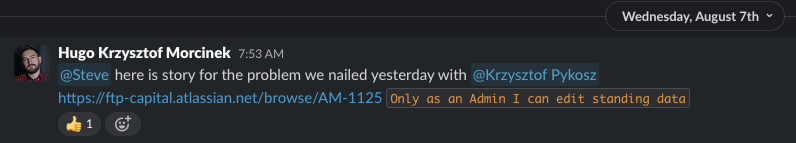

Hugo prezentuje
There are only two hard things in Computer Science: cache invalidation and naming things

Call for lightning talks
Wolę krótsze formy. Przekonał mnie Paul Klipp i Wiktor
Będzie skakanie po tematach.
Szybsza forma pozwala szybciej dostarczyć wartość w formie prezentacji czegoś na forum firmy
Moje opinie, context is king
Coś działa w jednym kontekście, ale czy na pewno potrzebujemy tego właśnie teraz
Ile to będzie $$$?
Draw Seven Red Lines
The Expert (Short Comedy Sketch)O czym jest ten film?
Czy klient chce feature "permissions"?
czyli przejście z authorization Role Based na Permission Based
As an Admin, I want to set up user permissions to ensure proper access control and security
Jaka jest najważniejsza rzecz która wkrótce nas ugryzie?
(Co nam da najwięszą korzyść?)
cd
Wdech wydech i czekamy, nie sugerujemy
Najpierw musieliśmy poczekać. Klient przez pół godziny pokazywał nad czym teraz się męczy. Wysłuchać. To był inny system, ale wysłuchać.

Jak rozmawiać z klientem, który nie wie, czego chce?
Oprogramowanie szyte na miarę. Jak rozmawiać z klientem, który nie wie, czego chce
Jak poprowadzić integrację
DocIt pracujące dla klienta, utrzymujące inny system.
Wysyłają klientów do nas.
Wysyłamy nasze deale do nich.
Co jest ważne, jak poprowadzić takie coś?
...
Musimy ograć edge case
Ale czy ja chcę utrzymywać taki kod
Biznesowo nie
REST
/admin/client-entities/{}/
/admin/client-group/{}/client-entities/{}/
REST uczepiliśmy się tych rzeczowników za bardzo
POST /deals/{}/ { "state":"APPROVE" }
/deals/{}/approve
REST API Design - Resource ModelingBE musi validować bo nie można ufać FE
Kiedy to jest prawdą
Sklep, który nie wziął cen z bazy tylko z payloadu
Kiedy to NIE jest prawdą
Nasza aplikacja
Nasza aplikacjaMoje obserwacje
Czy klient powinien za to płacić?
Czy niektóre applikacje nie powinny startować inaczej, np FE heavy?
To na forum PC moze trzeba przemyśleć, klient i tak zawsze powie że ostatecznie to ma działać, to do nas należy wybór ścieżki